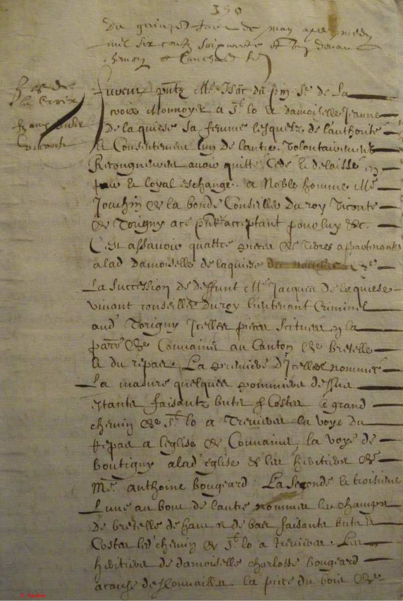
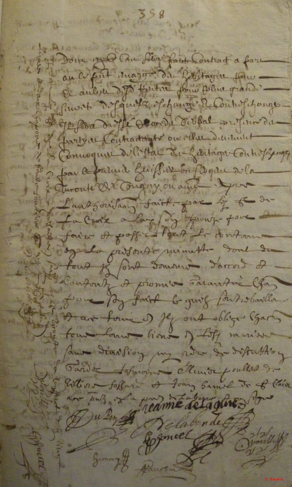

DOCUMENTS NOTARIAUX
DOCUMENTS NOTARIAUX
NOTARIAT DE
TORIGNI
Référence : 5E13166
Provenance : Archives
Départementales de
Saint-Lô, via Jean-Pierre Guilloux
le 7
février 1646,
Guillaume Lemière prêtre curé de Notre
Dame de
Torigni, Me Pierre
et Joachim de La
Bonde père et fils de
Villiers-Fossard, Pierre Daion et Jean Baptiste Boissel de Torigni
à Noble homme François Levallois sieur de Lamay?
archer
vétéran des gardes du corps du roi et
stipulé par
Jacques de Pierres sieur du lieu son fils en loi...
Référence : 5E13189
Provenance : Archives
Départementales de
Saint-Lô, via Jean-Pierre Guilloux
Le 3 janvier 1660, Pierre de la Bonde,
sieur de la Croix, monnoyer de Saint-Lô et Charlotte
Bougeard son épouse reconnaissent avoir
baillé
à Jean Lyot, laboureur de la paroisse de
Sainte-Suzanne-sur-Vire, la dite Charlotte Bougeard veuve en
premières noces de Nicolas de la Quieze, sieur de Laurey,
vivant
Lieutenant ? de Bayeux...
Référence : 5E13189
Provenance : Archives
Départementales de
Saint-Lô
L'an mil six cent soixante le
treiz[iem]e jour de febvrier appres midy par devant ph[i]l[ipp]e hemery
et Robert Cauchard tabellionsroyaulx a thorigny soubsignes
fur p[rese]nt Me pierre de la bonde
advocat et monnoier a Sainct lo lequel de sa bonne volonté
Recongneut avoir passe p[ro]cura[ti]on a [laissé vide] de pour
luy comparroir en la ville de Rouen et la prolonger(?) la compromission
faite sur Monsieur fauvel(?) seigneur de tounentz(?) con[seill]er du
Roy en sa cour de parlement de Rouen entre les constituants d une part
Ysaac dupin sieur de la Croix et Luc de la bonde dane(?) et Me Joachim de la bonde vicomte aud thorigny chacun en sa qualitté [...]
signatures La bonde, Dringot, Hemery, Cauchard
Référence : 5E13190
f°350
Provenance : Archives
Départementales de
Saint-Lô, via Jean-Pierre Guilloux
du
quinze Jour de may apres midy mil six cents soixante et un devant
hemery et Cauchard
furent p[rese]nts Me Isaac dupin Sr de La croix Monnoyer a St lo et
Damoiselle Jeanne De la quiese sa femme lesquels de
l'authorité
et consentement lun de lautre volontairement Recongneurent avoir
quitté cedé et delaissé en pure et
loyal eschange
a Noble homme Me Joachin
de la bonde Conseiller
du roy viconte de Torigny a ce p[rese]nt et acceptant pour
luy et [ses hoirs] C est ascavoir quattre pieces de terre appartenantes
a lad damoiselle de quiese de la succession de deffunct Me Jacques de
la quiese vivant conseiller du roy lieutenant criminel aud[it] torigny
Icelles pieces scituées en la parr[oisse] de Couvains au
canton
de bretelle et du repas la premiere d'icelles nommée la
masure
quelques
pommiers dessus estants faisants buts et costes le grand chemin de St
lo a Trevieres la voye du Repas à leglise de Couvains, la
voye
de boutigny lad[ite] eglise & les heritiers de Me
anthoine
bougeard ; La segonde et troisieme Lune au bout de l autre nommees les
champs de bretelle de haut et de bas faisants buts & Costes
led[it]
chemin de St lo a Trevieres les heritiers de damoiselle charlotte
bougeard a cause des courailles(?),
la piece du bois de bretelle cy apres specifies les Rep[rese]ntants
ledit Me Anthoine bougeard a Cause des helaines(?) les representants
jean pohier et Anthoine pohier La quatr[iem]e et derniere lad[ite]
piece du bois faisants buts et costes led piece des champs de bretelle
de hault lesd[its] hel[aine](?) la voye des essarts et de boutigny a
leglise de Couvains led Sr
viconte a
cause du grand cloissier les Rep[rese]ntants martin pohier compris les
hayes et fosses de tant qu il en appartient auxd[ites] pieces cy dessus
nommees avec tous les droits dignites et libertés a icelle
apparten[ant] et ainsy qu elles se pourportent et contiennent ne
pouvant declarer de quelle tenures lesd[its] heritages sont mouvants
pour nen avoir jamais rendu adveux sen rapportant aux anciens adveux
qui sen pourront rep[rese]nter lad eschange neantmoins
baillé en
exemption de touttes rentes et charges sieurialles [...]
en outre ce que dessus lesd S[ieu]r et damoiselle de la Croix ont
baillé aussy en pur et loyal eschange vingt livres avec deux
chappons le tout de rente fonciere et y racquitable a avoir et prendre
sur louis sansrefus procedant de fieffe dheritage dont le contract sera
mis touttefois et quantes es mains sudict sieur viconte
par lesd s[ieu]r et damoiselle de la Croix pour sen faire
payer
des arrerages co[mm]e du jour qu il entrera en possession dudict
eschange Et en contreschange de ce que dessus ledit sr viconte
a baillé aud[it] s[ieu]r et damoiselle de la Croix pour
tenir le
non costé et ligne d'icelle damoiselle C'est a scavoir six
vergées de terre faisant la quatriesme partye de vingt
quatre a
prendre dans la piece des Coustures scituee en la parroisse de Moon
lesd six vergées a prendre au costé vers le
soleil de
midy faisants buts et costes le chemin de St fremond et led Sr de la bonde pere
dudit Sr Viconte les heritiers du Sr de la motte St Clair le surplus
desd vingt quatre vergées appartenant aud[it] s[ieu]r et
damoiselle de la croix et ausd de sr luc(?) suivant la sentence
arbitralle rendue par Mons[eigneu]r de Touvens(?) con[seille]r
en le Cour du troisieme jour d'aoust dernier sur lesquelles vingt
quatre vergees y a plusieurs chesnes tant en troche(?) qu'autrement
de diverses grosseurs la quatriemse partye appartenant aud
s[ieu]r
viconte
qui na peu
declarer de quelle seigneurie lad piece est tenue pour n'en avoir
jamais rendu adveu la baille toutefois exempte de touttes rentes fors
et reliefs & treiziemes le cas offrant se rapportant aux
anciens
adveus pour lad teneur promis en ou[tr]e led S[ieu]r viconte bailler
aud s[ieu]r et damoiselle quattre vingt dic livres de rente fontiere et
irraquitable en bonne et vallable assiette dans les parroisses de
Villiers St Clair ou de Moon en trois ou quattre parties dont les
contrats seront fournis par led s[ieu]r viconte dans
le jour St michel prochain
[...]
tesmoins ollivier poullet de villiers fossard et jean hamel de St clair
Signatures Dupin, de la Quiese, Delabonde,
Hamel, Poullet, Hemery, Cauchard


première et
dernière pages de l'acte
Référence : 5E13594
f°207
Provenance : Archives
Départementales de
Saint-Lô
Le 20
février 1715,
amortissement de rente par noble dame Anne Antoinette Morant, veuve et
non héritière de Henry François
de la Bonde,
écuyer, sieur de Soisy, conseiller du Roi, vicomte de
Torigni en
faveur de André Lair, sieur des Longchamps,
trésorier de
Saint Laurent de Torigni.
Référence : 5E13773
Provenance : Archives
Départementales de
Saint-Lô
Le 24 juin 1713,
testament de Henry
François de la Bonde et choix du tuteur,
confirmé le 10 mai 1714.
Référence : 5E13979
Provenance : Archives
Départementales de
Saint-Lô, via Jean-Pierre Guilloux
Le 9 mars 1713, Me
Pierre Harasse sieur de Bois Landelles d'Hudimesnil et Dlle Marie
Marguerite Lecoq fille de Jean sieur la Maugerie? ; inventaire du
curé de Bérigny un certain Lecoq?, acte de cent neuf
pages ; contrat de mariage du 15 juillet 1699 à Torigni entre
Jean Lecoq sieur de la Maugerie et feue Demoiselle Marie Charlotte de la Bonde.
NOTARIAT
DE
CERISY-la-FORET
Référence : 5E8932
Provenance : Archives
Départementales de
Saint-Lô, via Jean-Pierre Guilloux
Le 20 novembre 1625, contrat de
mariage entre Me Henri
de la Bonde, avocat, sieur de la Mare fils
aîné de feu Me Denis et de
Marie Lepégot, avec Dlle Raoulette de la Quieze
fille de feu Me Nicolas et de Charlotte Bougeard.
Référence : 5E9034
Provenance : Archives
Départementales de
Saint-Lô, via Jean-Pierre Guilloux
Le 11
juillet 1696, fut présent Henri-François
de La Bonde, écuyer fils de feu Joachim . Est
cité Pierre
de La Bonde son aïeul.
NOTARIAT
DE
CERENCES
Référence : 5E18469
Provenance : Archives
Départementales de
Saint-Lô, via Jean-Pierre Guilloux
Le 20 novembre 1625, contrat de
mariage entre Nicolas Lecomte, écuyer, fils de François et demoiselle Charlotte de la Bonde,
d'Orval, avec Demoiselle Renée Madeleine Françoise de
Grimouville, fille de feu Julien, seigneur de Hyenville, Montmartin et
de demoiselle Madeleine de Pierre.
Référence : 5E6347
Provenance : Archives
Départementales de
Saint-Lô, via Jean-Pierre Guilloux
Le 2 février 1723, contrat de
mariage entre Maître Paul Bernard Brohon sieur de Bois Landelle,
conseiller du roi fils et héritier de feu Paul François
Brohon sieur de Boisval et de feue Dlle Madeleine Harasse, avec Demoiselle
Marie Jeanne Marguerite Harasse fille et seule
héritière de Maître Pierre Guillaume sieur de
Boislandelles et de feue Dlle Catherine Françoise de La Bonde.
dernière
modification : 22 novembre 2010
|

|
|
retour à la famille de la Bonde
|